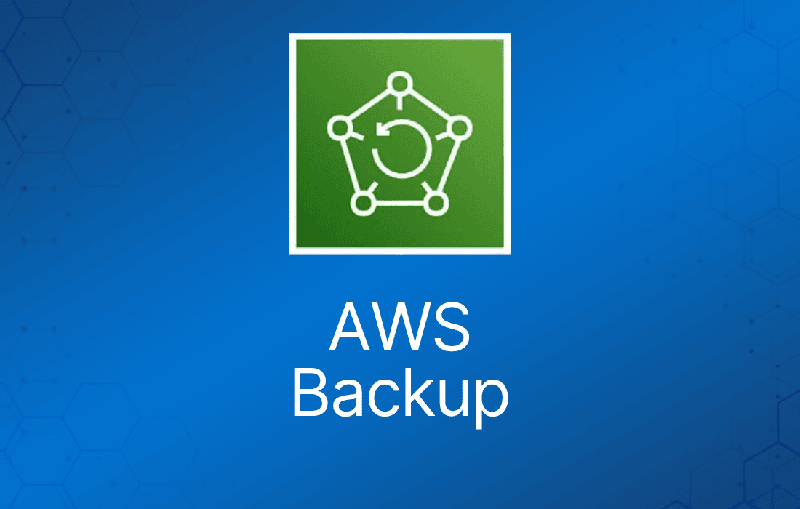

AWS Backup 提供集中式、自动化的数据保护。
可跨 AWS 服务和混合工作负载使用。
有助于满足数据保护方面的监管合规要求和业务策略。
与 AWS Organizations 集成，可集中部署数据保护策略。
跨 AWS 账户和资源，配置、管理和治理备份活动。
AWS Backup 可以保护多种 AWS 资源，包括：
- Amazon EC2 实例。
- Amazon EBS 卷。
- Amazon RDS 数据库。
- Amazon DynamoDB 表。
- Amazon Neptune 数据库。
- Amazon DocumentDB 数据库。
- Amazon EFS 文件系统。
- Amazon FSx for Lustre 和 Windows File Server 文件系统。
- AWS Storage Gateway 卷。
- 本地 VMware 工作负载以及 VMware Cloud on AWS。
- Amazon S3 bucket。
AWS Backup 可以将备份跨多个 AWS 服务复制到不同的 Region。
跨 Region 的备份副本可以通过调度手动或自动部署。
还可以为 AWS Organization 内的账户配置跨账户备份。
基于策略的备份
使用 AWS Backup，你可以创建称为备份计划（backup plan）的备份策略。
备份计划用于定义备份需求。
然后将备份计划应用到你要备份的 AWS 资源上。
你可以创建多个独立的备份计划，以满足特定的业务和监管合规要求。
备份计划让你可以轻松地在整个组织和各个应用中实施备份策略。
基于标签的备份策略
AWS Backup 允许你只需为 AWS 资源打上标签，即可将备份计划应用到这些资源。
确保所有 AWS 资源都按照你的策略得到备份和保护。
AWS 标签是组织和分类 AWS 资源的好方法。
与 AWS 标签的集成让你可以快速将备份计划应用到一组 AWS 资源，使其以一致且合规的方式进行备份。
自动化备份调度
AWS Backup 允许你创建可自定义的备份计划（schedule），以满足业务和监管方面的备份要求。
你也可以从基于常见最佳实践的预定义备份计划中进行选择。
AWS Backup 会按照你定义的策略和计划自动备份 AWS 资源。
备份计划包括备份开始时间、备份频率和备份窗口。
自动化保留管理
你可以配置备份保留策略，根据业务和监管合规要求自动保留和过期备份。
自动化备份保留管理只在需要时保留备份，从而将备份存储成本降到最低。
AWS Backup Vault Lock
AWS Backup Vault Lock 可以保护你的备份，防止因意外或恶意操作导致备份被删除或其生命周期被更改。
你可以使用 AWS CLI、AWS Backup API 或 AWS Backup SDK，为现有 vault 或新 vault 应用 AWS Backup Vault Lock 保护。